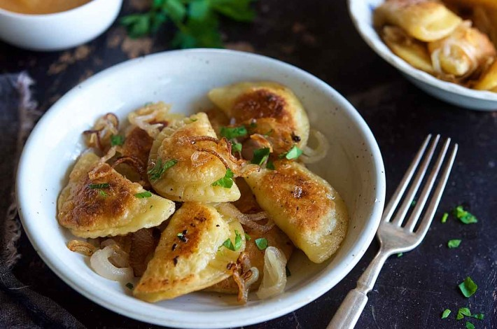
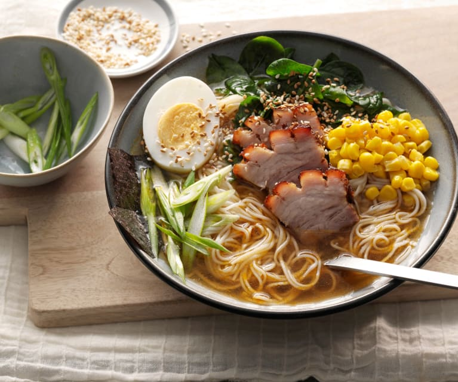
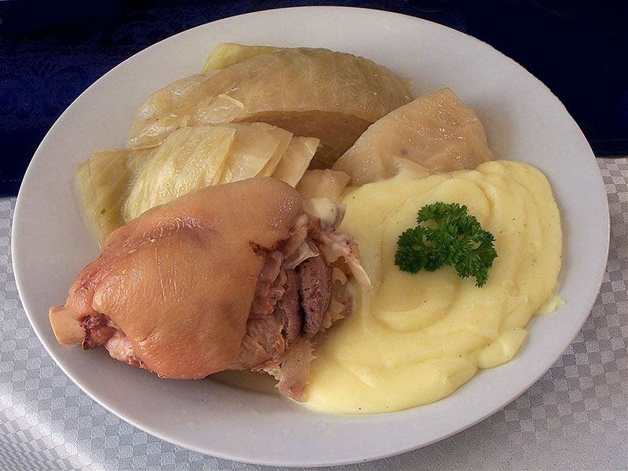
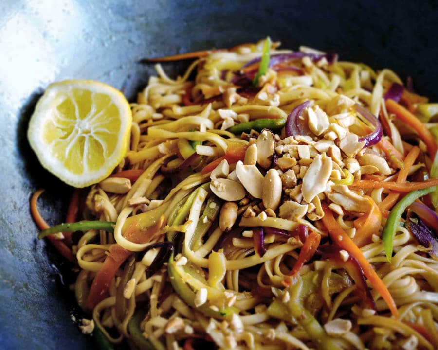
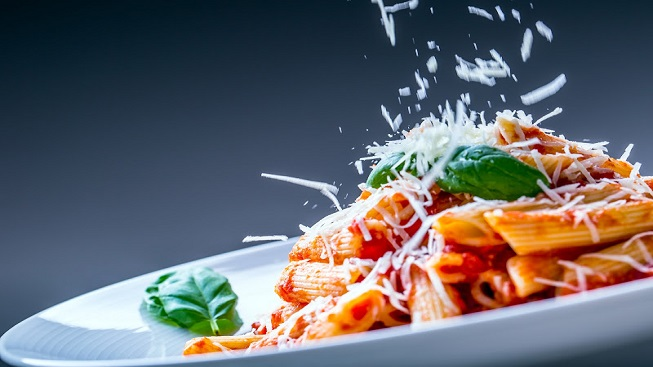

MENÚ
| Polonia | Asia | Italia |
|---|---|---|
|  -pierogi (cerdo o ternera) -guarnición:chucrut -salsa a elegir |
 Codillo de cerdo 250 gr -guarnición:pure -chucrut |
Codillo de cerdo 250 gr -guarnición:pure -chucrut |
|  Codillo de cerdo 250 gr -guarnición:pure -chucrut |
 Codillo de cerdo 250 gr -guarnición:pure -chucrut |
 Codillo de cerdo 250 gr -guarnición:pure -chucrut |